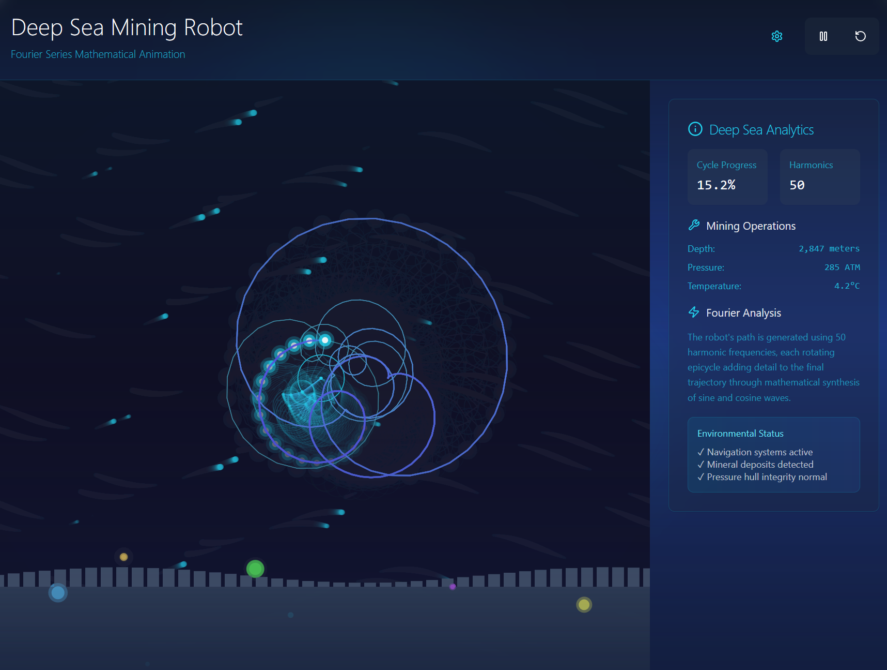
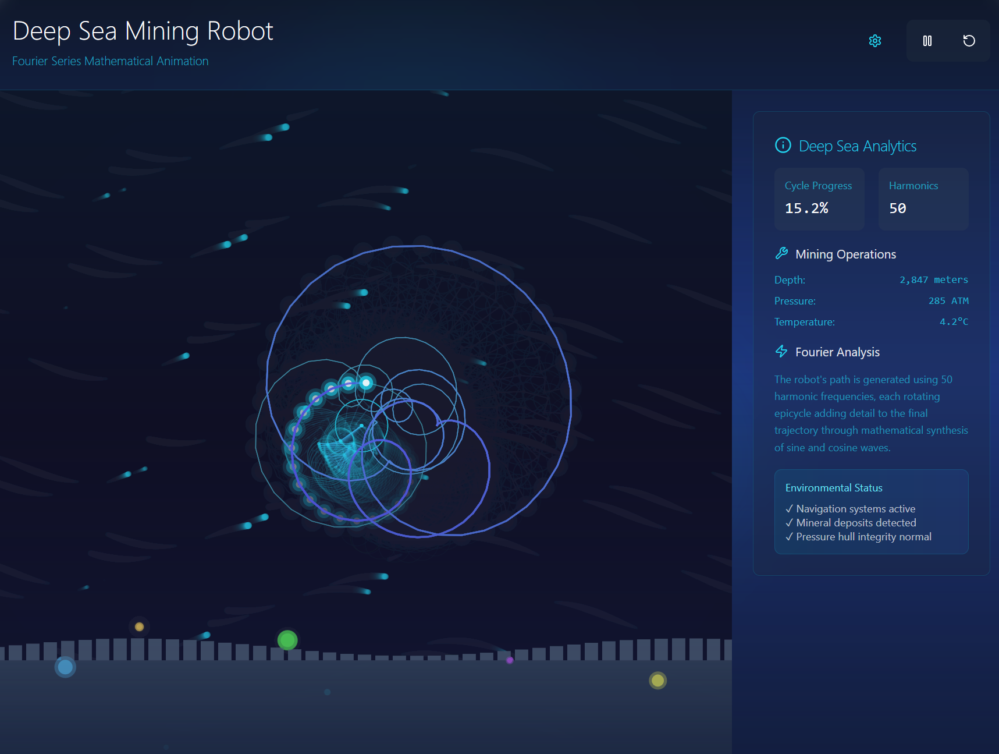

How AI is Transforming Ocean Mining
Discover how artificial intelligence is making deep-sea exploration safer and more sustainable.
Read More
Backed by field-tested prototypes and AI-automated systems, we’re proving clean ocean mining is no longer a fantasy.
Triton Mining Co. is building the future of deep-sea exploration—cleaner, smarter, and open-source.
Explore the TechnologyOctopod Miner: Flexible limbs for nodule extraction with minimal disturbance.
Non-invasive robotic fleets guided by AI—engineered for precision and preservation.
 



Fleet includes multi-role AUVs operating in swarms under a command-control hierarchy. Operational at 4000m depth, these units map, collect, and communicate autonomously.
Every system is built from first principles—optimized for durability, efficiency, and repairability.
We focus on nodule-rich regions identified for sustainable harvesting under ISA guidelines.
We're supported by a team of technologists, builders, and investors committed to long-term planetary solutions.
Our revolutionary open-source monitoring platform ensures complete transparency and real-time ISA alignment—available to regulators, scientists, and the public.
DeepSeaGuard provides comprehensive monitoring and transparent reporting aligned with ISA standards ISBA/21/LTC/15, ensuring every operation meets the highest environmental and regulatory standards.
Live AUV telemetry, NOAA/ISA oceanographic data, and remote database connectivity (PostGIS/TimescaleDB)
OpenCV and TensorFlow integration for automated environmental impact assessment and predictive modeling
ISA reporting mode with CSV, XML, and GIS format exports for regulatory compliance
Instant notifications for ISA violation thresholds, sensitive zone breaches, and environmental anomalies
DeepSeaGuard ensures full compliance with International Seabed Authority standards and environmental protection requirements:
"DeepSeaGuard sets a new standard for ocean mining compliance" — Dr. Evelyn Nash, Policy AdvisorRequest DeepSeaGuard Demo View on GitHub
Explore the critical mineral supply-demand gap and our environmental impact reduction.
Exportable CSVs available. Public API access by request.
Discover how artificial intelligence is making deep-sea exploration safer and more sustainable.
Read MoreExplore the unique engineering hurdles faced when building autonomous underwater vehicles.
Read MoreLearn about the importance of transparency and compliance in the future of ocean mining.
Read MoreInterested in learning more about our technology or DeepSeaGuard compliance platform? We'd love to hear from you.